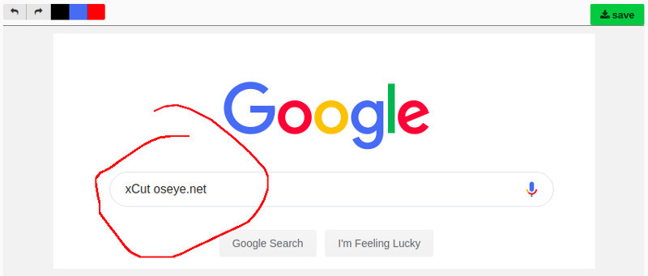
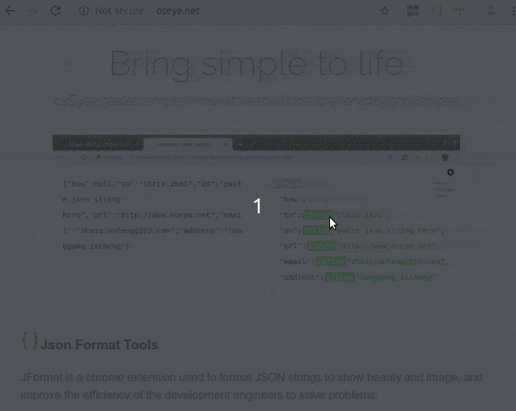
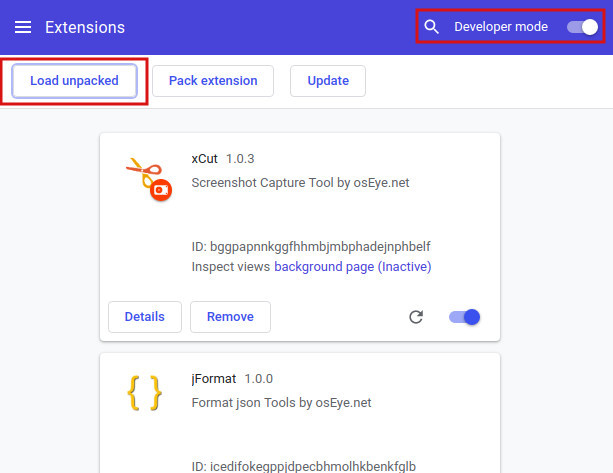

- - Keyboard Shortcut:Ctrl+X
- - capture select area
- - mark by pencil
- - save anywhere
Quick Start
Online Install
xCut can work with Chrome or Chromium web browser. you can install it on the google web store by the link:Online Install.
Offline Install
- You also can click the link to download the zip and install it offline
- Unzip the pakcage to whatever you like.
- Open the Extension Management page by navigating to chrome://extensions.
The Extension Management page can also be opened by clicking on the Chrome menu, hovering over More Tools then selecting Extensions.
- Enable Developer Mode by clicking the toggle switch next to Developer mode.
- Click the LOAD UNPACKED button and select the extension directory which you unziped.

Ta-da! The extension has been successfully installed. Because no icons were included in the manifest, a generic toolbar icon will be created for the extension.
ChangeLog
xCut-1.0.5 [2019-09-07]
- Feature: support language:es and ko
- Feature: support on/off toggle,Keyboard Shortcut:Ctrl+x
- Change: exclude https://chrome.google.com/**
- Change: modify the name and add the short name
xCut-1.0.4 [2019-08-27]
- Change: enriched preservation pages;
- Feature: add a new page for saveing;
- Feature: add a new page to save and edit screenshots;
xCut-1.0.3 [2019-08-25]
- Feature: adding a function for marking;
xCut-1.0.2 [2019-08-21]
- Feature: support for custom saving;
- Feature: add a hint page when opening blank, extension, and startup pages;
- Change: add a new brochure;
xCut-1.0.1 [2019-08-23]
- Change: modify this screenshot start with 'xCut';
- Change: add a new icon;
- Fix: add installed listener;
xCut-1.0.0 [2019-08-19]
- Feature: capture browser screen;
- Feature: auto download screenshot;